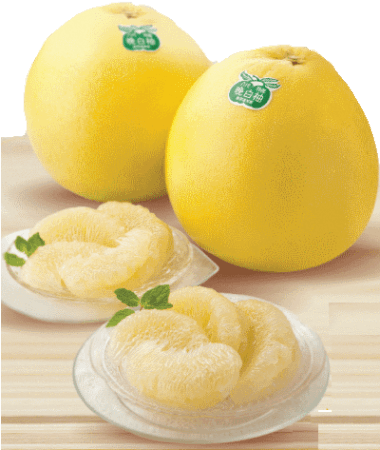
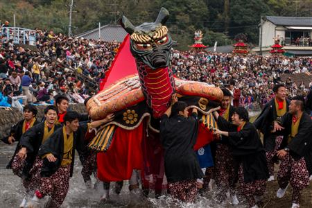

出身地 熊本県：八代市

八代市：人口11万6666人(2025年5月1日時点) 面積680.6㎢
=八代の魅力=
| 特産品 | 観光スポット | イベント |
|---|---|---|
| トマト | 八代城跡 | やつしろ全国花火競技大会 📆10月19日 |
| 晩白柚 | 球磨川 | 八代妙見祭 📆11月22・23日 |
| い草 | 松浜軒 | 八代球磨川祭り 📆8月上旬 |
| シュードーナツ | くまモンポート八代 | 九州国際スリーデーマーチ 📆3月1日～3日 |
ミネラルたっぷり！
甘くておいしい
トマト

トマト生産量全国1位の熊本県において、八代市は市町村単位でも全国1位！ 干拓によって生まれた八代平野のミネラル豊富な土壌で育ったトマトは抜群のおいしさと評判です。特に海沿いの温暖な気候を活かした冬春トマトの栽培が盛んで、八代ブランドの「はちべえ」や塩トマトなどが主な品種です。旬を迎える冬の時期には、八代地域の飲食店が八代産トマトを使ったパスタやカレー、パンなどを提供するスタンプラリーも実施しています。
ギネスも認めた
世界最重量柑橘
晩白柚
平均的なもので直径約20cm、重さ約2kgという世界最大級の柑橘類・晩白柚。ギネス世界記録にも「世界で最も重いザボン類」として登録されています。上品な香りと日持ちのよさが特徴で、香りと見た目を楽しんだあとにおいしく味わうことができるため、贈答用としても人気です。果実はサクサクとした食感と甘酸っぱい味わいが特徴で、そのまま食べるほか果肉入りゼリーやソースなどにも使用されています。また、厚い皮は砂糖漬けなどに加工されています。
全国有名花火師30業者が技を競う
やつしろ全国花火競技大会
北は秋田から南は鹿児島まで、全国の花火師が技術を競う花火大会。熊本県八代市の球磨川河川緑地で開催され、今年で第38回を迎える。例年20万人以上が訪れるこの大会では、5号玉や10号玉、スターマインなどの競技花火に加え、オープニング花火や音楽とシンクロしたミュージック花火、協賛花火といった演出が次々に打ち上がり、約2時間15分にわたって夜空を彩る。物産展や屋台も並び、花火だけでなく地域の魅力も存分に味わえる一夜となる。
九州三大祭
八代妙見祭
江戸時代から続く妙見宮（八代神社）の秋の祭礼行事です。11月22日に神幸行列（お下り）、御夜、23日に神幸行列（お上り）が行われ、獅子や笠鉾、亀蛇など、伝統ある出し物が数多く参列します。平成28年にユネスコ無形文化遺産に登録されました。